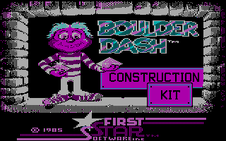
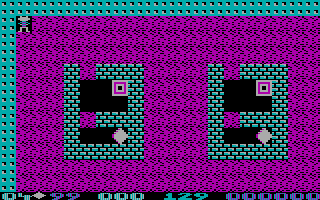

名稱：鑽石迷宮 (Boulder Dash: Construction Kit，英文版)
簡介：First Star 1986年出品的動作益智遊戲（其實算是一個編輯模組），由Epyx代理發行，
1987年移植至DOS。遊戲規則為避開或處理所有障礙，以取得指定數量的鑽石過關 [待補]。


備註：本版為海外版（智冠版會當，原因不明）
保護：無
說明：
1.Construction Kit：迷宮編輯模式
2.Game Module：試玩迷宮